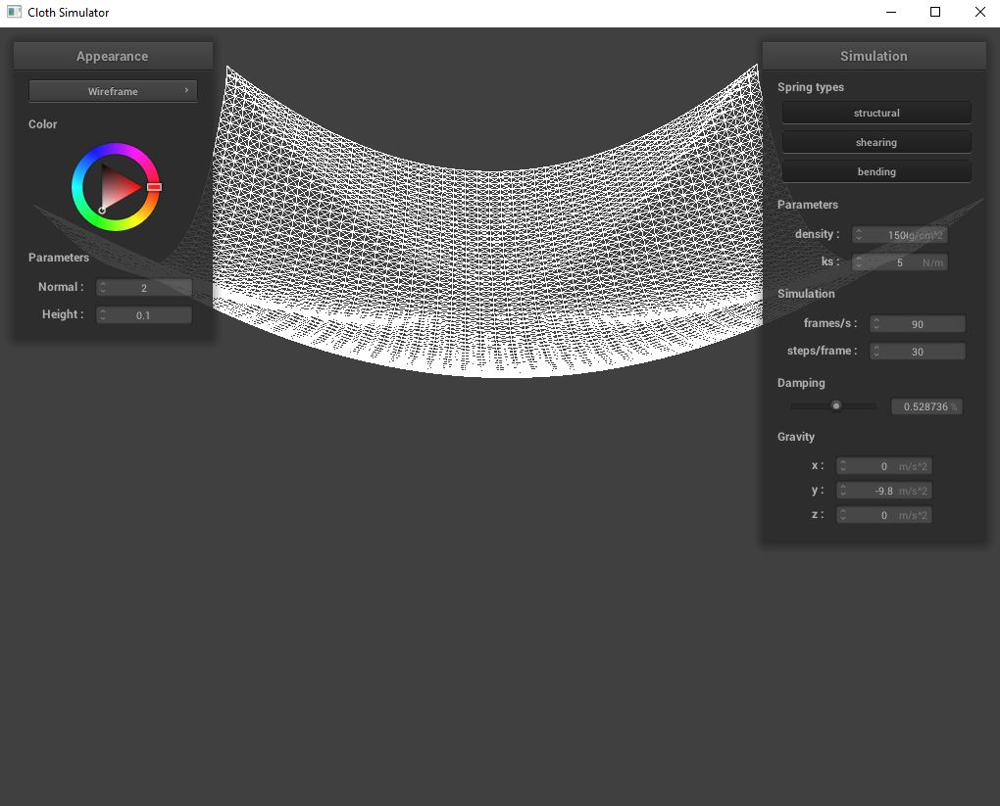
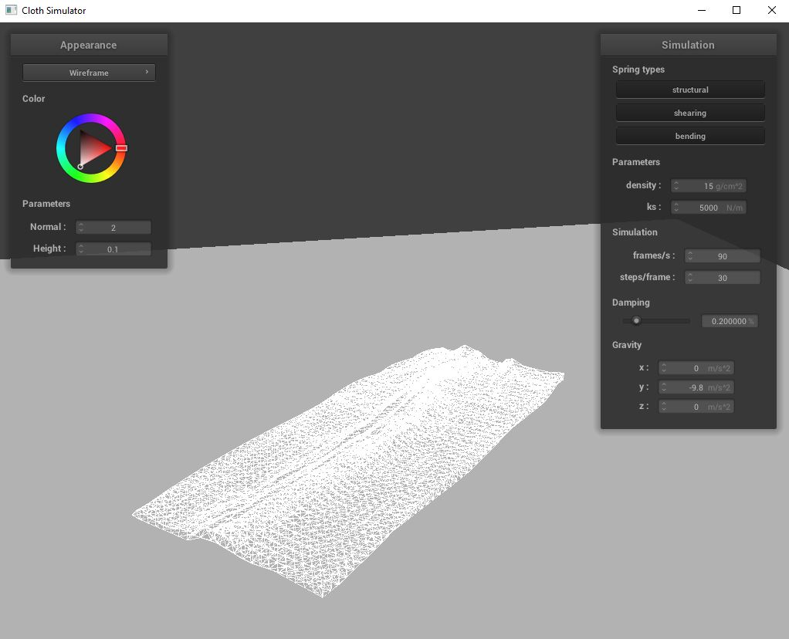

Overview
The goal of Clothism is to model and simulate cloth in an accurate and aesthetically pleasing way. It consists of three general phases: modelling, simulation, and shading, each discussed in depth in the relevant sections.
Out of all the projects I have completed for CS 184, this was probably the most difficult. Not only were the concepts initially challenging to grasp, but most importantly it was incredibly difficult to debug due to the interactions between each part and the massive number of things that could be going wrong. At points, my debugging attempts included commenting out everything and adding them back in line by line, and scaling forces by numbers to see whether they were too large or too small to isolate problems.
All things considered, this project was also the most satisfying - seeing the cloth simulation in action is incredible, and makes all that effort worth it.
Part I: Masses and springs
The first part of the project is modelling the cloth. Our chosen model is a wireframe that consists of point masses interlinked by massless springs. This model successfully captures the stretchy and flowy nature of cloth by generating points connected together, but letting them move freely otherwise. The model uses three types of springs: structural, shearing, and bending. Structural springs link points to their immediate neighbors (diagonal neighbors are not considered), while bending springs skip one neighbor. Finally, shearing springs connect point masses diagonally.
In terms of coding, generating the wireframe model is fairly simple - it consists of sequentially generating each point of mass, and then attaching the necessary springs from each mass to the relevant neighbors. The model also allows points to be pinned, blocking them from moving regardless of any force that may be applied in the next section

|
|
Part II: Simulation via numerical integration
With the model set up, the second part of the project begins to set up the simulation. The goal is to compute and apply all the forces acting on the cloth (by applying them to each point mass). We consider two sets of forces: external forces, and those due to the springs inside the model. The external forces apply to the entirety of the model, such as those due to gravity, thus, we calculate the resultant force by summing up all accelerations and adding the force to each point mass using Newton's 2nd Law.
Next, the simulation calculates the forces applied to each mass due to the springs using Hooke's Law by iterating over each spring. I use a bending coefficient equal to 0.2 to reduce the effect of bending constraints for better results.
Once the total force acting on each point mass is computed, Verlet integration is used to find the position the point mass will move to by the next time step. The position of the point is already known, acceleration is found once again using Newton's 2nd Law, and velocity is approximated as the difference between the point's positions in the last time step and the current one. Finally, a damping coefficient is added to velocity to simulate energy loss. The new position is then constrained to maintain a maximum length on all springs to avoid unrealistic deformations.
This section of the algorithm took by far the most time to implement, in part due to numerous bugs that were difficult to track down, such as floating point or double conversions.
|  |
The above images show the cloth simulated with varius density, damping, and spring constant values. The spring constant determines the amount of force required to stretch the spring a set distance, meaning with higher values the cloth becomes more rigid, and maintains its shape better. For the above scene, this means the cloth rests at a higher position and creases less. The effect of reducing the density, and therefore the mass, of the cloth has an effect similar to increasing the spring constant, as in the force due to gravity pulling the point masses away from each other is smaller. As a result, the springs stretch less. Finally, damping determines how much of its momentum the spring carries to the next time step. The effect of damping is to move the simulation towards a steady state - in fact without damping the cloth keeps bouncing. With higher damping values, the simulation reaches a steady state faster.
Part III: Handling collisions with other objects
The next step in the simulation is to make sure the cloth does not go through other objects in the scene. This is achieved by taking every point mass in the cloth that would have moved into another object, and instead applying a correction vector to their position to move them outside the surface of the object. We also account for friction to better capture the cloth's movement along the surface of the collided object.
For a spherical object, a point mass inside the sphere is intead corrected to the nearest tangent point on the surface of the sphere, calculated by moving a distance equal to the radius away from the origin of the sphere in the direction of the point mass. For a plane, this is a bit more complicated as the plane is a two-dimensional object. First, a test is applied to see whether the last position and the current position of a point_mass lie on the same side of the plane. If not, then the point must have crossed the plane, so it is corrected to be a set offset away from the surface of the plane on the same side as its last position.
|
|
|
|
|
Part IV: Handling self-collisions
The last portion of the simulation accounts for self-collisions within the cloth to prevent it from clipping through itself. Since checking each pair of points masses for collisions would be impossibly expensive in terms of computations, the space is partitioned into small boxes, so that we only need to check other points masses within a box. To achieve this, we must be able to hash our points into the box it is currently in using it's position so that points within the same box will hash to the same index - allowing us to simply maintain a list of points for each box. My hash function uses division and modulo to compute the position of the box a point mass should be in, and then a polynomial built using a decently large prime number to create a hash value.
Consequently, the simulation is able to check the box volume each point mass hashes to in order to find a list of potential collisions, and ensures no two points are closer than twice the predefined "thickness" of a point.
The challenge of this portion of the project was to figure out a working hash function. In order to assist in this process, I drew various examples of box volumes and point masses to think about a formula that would determine the correct box they should hash to.
|  |
The images above show scenes from a simulation of the cloth falling on itself. Repeating the same simulation with an increased spring constant results in the spring unfolding itself much faster, and reduces the creases that occur significantly. Furthermore, creases are larger and fewer. Increasing the density has an opposite effect. Since the force applied by gravity becomes larger, the spring pushes on itself harder, resulting in many creases and a delayed steady state.
Part V: Shaders
Finally, Clothism includes a series of shaders to create much more pleasing visuals. The shaders paint fragments of the cloth -and even move them- to create the illusion of lighting. A shader is a seperate program that runs on the GPU to expedite the process of determining the color of each pixel. First, a vertex shader determines the final attributes of a vertex, such as its position and its normal. Then, these are utilized by the fragment shader, potentially in bulk to avoid spending too much computation on every single point, to determine the resultant color after applying a lighting effect.
Implementing the shaders overall was a very unique experience, in part due to the departure from standard C++. I spent a fair amount of time reading libraries to understand the tools available to me in order to implement each shader. Most of the bugs I faced were syntax errors and type mismatches, caught at compilation, so I ran the code line by line and fixed my errors as I went until I was comfortable with the syntax. When I couldn't find documentation, such as on constructing a matrix using column vectors, I simply tried whatever seemed intuitive, and it often worked perfectly.
The first shaders implemented are the diffuse shader and the Blinn-Phong shader, with the former being rather trivial as it applies only one of the three lighting effects in the latter. The Blinn-Phong model computes the light falling on a point in three different steps: ambient, diffuse, and specular. The ambient component is uniform - it is applied to each point with a seperate ambient intensity independent of the light source. The diffuse component shades each fragment based on the fragment's normal and the direction of the light source, creating lighter and darker surfaces independent of the camera direction. Finally, the specular component visualizes a bright shining spot on fragments that reflect the light directly towards the camera, imitating a mirror. The lighting on the fragment is then computed as the total lighting from each of these components.
|
|
|
|
|
|
Next, I implemented a texture shader. The goal of this shader is to color fragments according to values determined by a texture instead of some lighting model. The shader samples the corresponding coordinates on the texture file and sets the color of the fragment to be the sampled results.
In addition to modifying the color of a fragment, shaders can modify other attributes such as the normal or the position of a vertex. The Bump shader uses a texture to perturb the normal of a fragment. As a result, unique lighting effects are achieved when later shading the fragment according to the Blinn-Phong model. The normal of the surface is determined by the change in values in the texture to reflect the direction of the change, while areas with similar values remain mostly unchanged. Since the normal of the fragment is calculated in local space, the shader transforms it into the model space by applying the tangent-bitangent-normal matrix.
Similar to the Bump shader, the Displacement shader modifies additional attributes of each fragment. The normal of a fragment is altered based on sampled values from a texture, and then lighting is applied according to the Blinn-Phong model. However, the Displacement shader also modifies vertices themselves in the Displacement vertex shader component. The position of each vertex is translated along its normal according to a height value sampled from the texture, resulting in 3D modifications to the original model.
|
|
|
The last shader implemented is a mirror shader. This shader makes use of a precomputed environmental map. The algorithm computes the direction of reflection for each fragment, using the camera position and the surface normal, and then this direction is used to access the environmental map. As a result, we are able to get the color values of whatever portion of the environment would have been reflected on the surface. Therefore we are able to avoid using ray-tracing and achieve significantly reduced computation during the simulation.